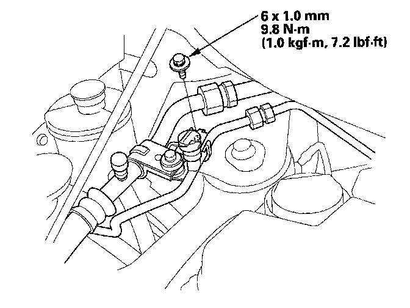
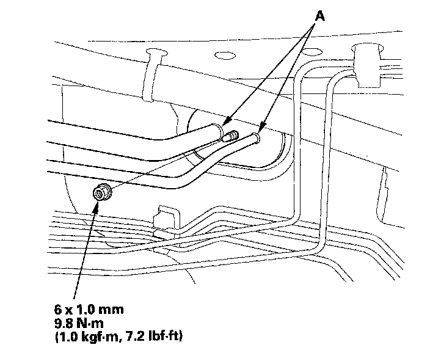
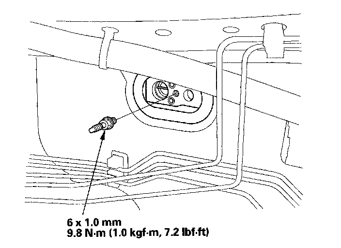
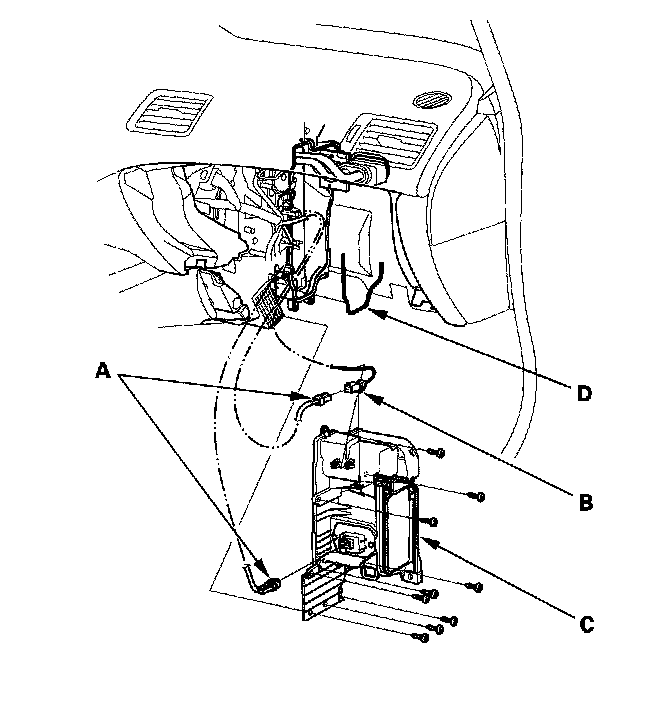
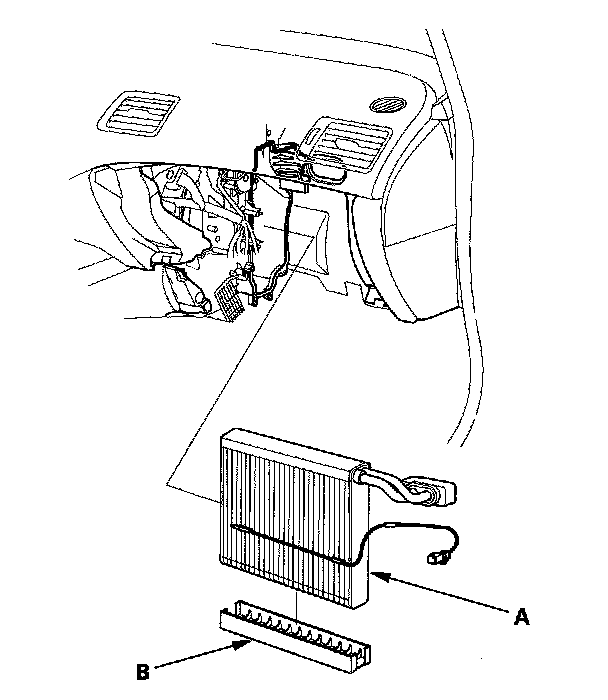
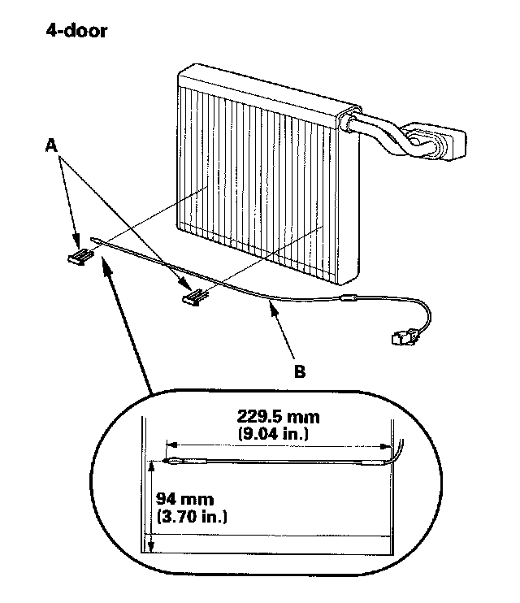
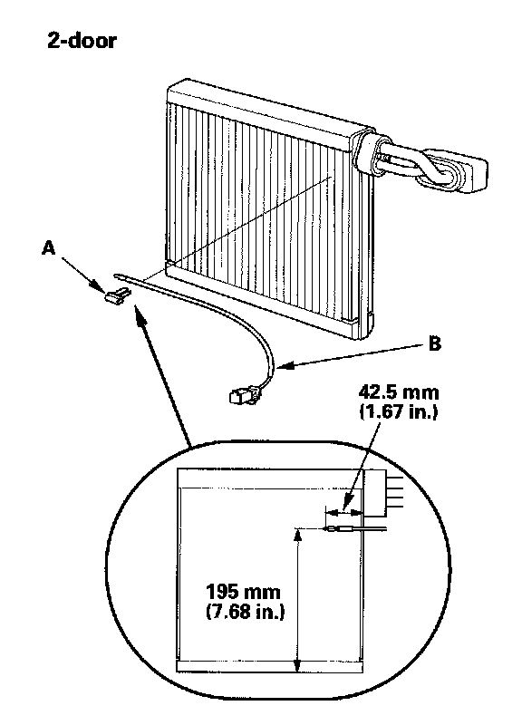

Evaporator Core: Service and Repair
Evaporator Core Replacement1. Recover the refrigerant with a recovery/recycling/charging station.

2. Remove the bolt.

3. Remove the nut, then disconnect the A/C lines (A) from the evaporator core.

4. Remove the stud bolt.
5. Remove the blower unit.

6. Disconnect the connectors (A) from the evaporator temperature sensor and the power transistor, then remove the connector clip (B). Remove the self-tapping screws, the expansion valve cover (C), and the seal (D).

7. Carefully pull out the evaporator core (A) without bending the lines, then remove the plate (B).


8. Remove the clips (A) and the evaporator temperature sensor (B).
9. Install the core in the reverse order of removal and note these items:
- If you're installing a new evaporator core, add refrigerant oil (SP-10).
- Replace the O-rings with new ones at each fitting, and apply a thin coat of refrigerant oil before installing them. Be sure to use the correct O-rings for HFC-134a (R-134a) to avoid leakage.
- Immediately after using the oil, reinstall the cap on the container, and seal it to avoid moisture absorption.
- Do not spill the refrigerant oil on the vehicle; it may damage the paint; if the refrigerant oil contacts the paint, wash it off immediately.
- Make sure that there is no air leakage.
- Charge the system.